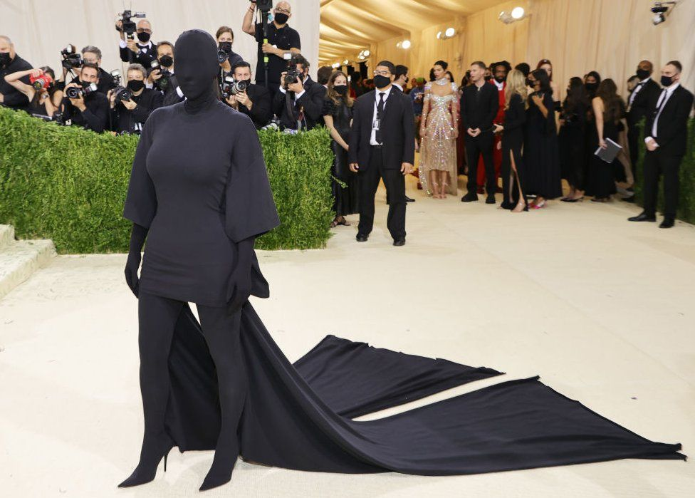

Una civiltà che sostituisce la costruzione del carattere con la costruzione dell'immagine, produce individui dipendenti dalla validazione esterna.
Le piattaforme digitali tendono a favorire contenuti in cui l'esperienza personale e l'emozione hanno un forte valore persuasivo. In questo contesto, chi propone analisi complesse o cerca di introdurre sfumature, parte spesso da una posizione comunicativamente svantaggiata, perché il formato delle piattaforme premia immediatezza, semplicità, identificazione estetica e reazione immediata.
L'epoca digitale ha spostato il baricentro della legittimazione pubblica dalla verità condivisibile all'esperienza individuale percepita. Non conta più soltanto ciò che è vero o falso, ma soprattutto chi parla, quale sofferenza racconta e quale risposta emotiva riesce a suscitare. In una società costruita su questo meccanismo, la formazione del carattere, il ragionamento razionale e la ricerca del bene comune perdono spazio rispetto alla costruzione ossessiva dell'identità individuale.
Nel dibattito democratico tradizionale, almeno come ideale, la forza di un'idea dipendeva dalla sua capacità di convincere attraverso argomenti condivisibili. Nei social, invece, la forza comunicativa dipende dalla capacità di suscitare una risposta emotiva immediata e superficiale.
«Così la politica muore, gli intellettuali scompaiono e rimangono solo influencer e campagne pubblicitarie.»
Se ogni individuo o gruppo sociale costruisce il proprio racconto principalmente attorno alla propria esperienza soggettiva, diventa più difficile costruire un linguaggio universale. Il conflitto non riguarda più soltanto interessi diversi, ma interpretazioni e percezioni diverse della realtà. E quando viene meno un terreno comune di discussione, la costruzione di masse critiche, la collettivizzazione e l'unione degli intenti divengono quasi impossibili.
Cosa succede quando una società premia l'estetica e oscura la ragione? Alcuni dei sintomi più evidenti sono: minore capacità di sacrificio individuale e collettivo, minore perseveranza, minore senso di appartenenza, sviluppo di identità individuali e performative intercambiabili, maggiore vulnerabilità ai trend del consumismo, politica sempre più simbolica e meno concreta.
I grandi movimenti del Novecento, pur con tutti i loro limiti, erano orientati prevalentemente alla trasformazione delle strutture materiali della società: lavoro, salario, istruzione, welfare, diritti civili, rappresentanza politica. Non erano lotte estetiche, erano lotte collettive concrete.
"Non erano lotte estetiche, erano lotte collettive concrete."
Una parte significativa dei movimenti identitari contemporanei concentra invece la propria attenzione sul riconoscimento simbolico e culturale dell'identità individuale.
Quando una società perde le proprie istituzioni formative — famiglia, scuola, comunità, sindacati, spazi culturali, partiti, associazioni, religioni — e viene sostituita da ecosistemi digitali basati sul consumo e sull'immagine, le identità diventano più fragili davanti al consumismo, incapaci di organizzare il pensiero collettivo, più fluide e più dipendenti dal riconoscimento esterno.
